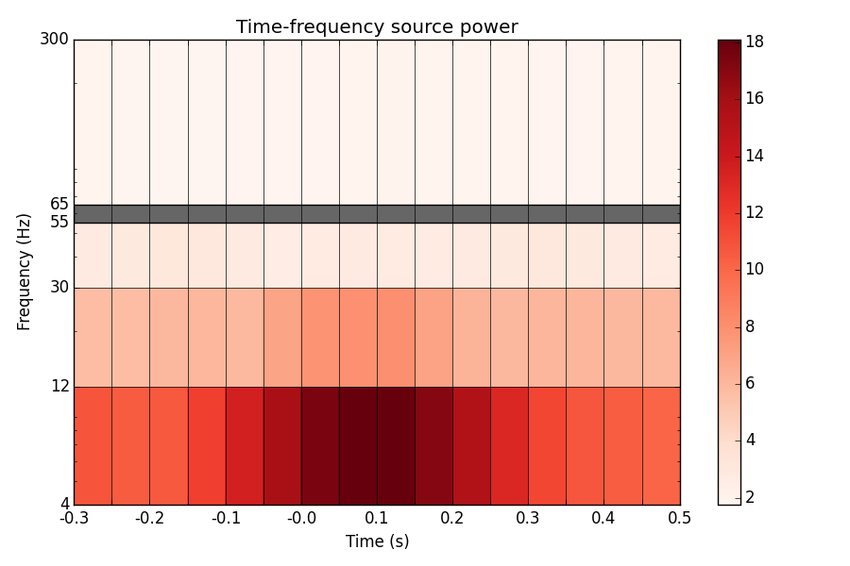

Time-frequency beamforming using DICS¶
Compute DICS source power in a grid of time-frequency windows and display results.
The original reference is: Dalal et al. Five-dimensional neuroimaging: Localization of the time-frequency dynamics of cortical activity. NeuroImage (2008) vol. 40 (4) pp. 1686-1700
Script output:
Opening raw data file /data1/agramfort/work/src/mne-python/examples/MNE-sample-data/MEG/sample/sample_audvis_raw.fif...
Read a total of 3 projection items:
PCA-v1 (1 x 102) idle
PCA-v2 (1 x 102) idle
PCA-v3 (1 x 102) idle
Current compensation grade : 0
Range : 25800 ... 192599 = 42.956 ... 320.670 secs
Ready.
Adding average EEG reference projection.
1 projection items deactivated
Created an SSP operator (subspace dimension = 3)
4 projection items activated
72 matching events found
Reading 2641 ... 3421 = 4.397 ... 5.696 secs...
[done]
No baseline correction applied...
Reading 4320 ... 5100 = 7.193 ... 8.491 secs...
[done]
No baseline correction applied...
Reading 5971 ... 6751 = 9.941 ... 11.240 secs...
...
Python source code: plot_tf_dics.py
# Author: Roman Goj <roman.goj@gmail.com>
#
# License: BSD (3-clause)
import mne
from mne.io import Raw
from mne.event import make_fixed_length_events
from mne.datasets import sample
from mne.time_frequency import compute_epochs_csd
from mne.beamformer import tf_dics
from mne.viz import plot_source_spectrogram
print(__doc__)
data_path = sample.data_path()
raw_fname = data_path + '/MEG/sample/sample_audvis_raw.fif'
noise_fname = data_path + '/MEG/sample/ernoise_raw.fif'
event_fname = data_path + '/MEG/sample/sample_audvis_raw-eve.fif'
fname_fwd = data_path + '/MEG/sample/sample_audvis-meg-eeg-oct-6-fwd.fif'
subjects_dir = data_path + '/subjects'
label_name = 'Aud-lh'
fname_label = data_path + '/MEG/sample/labels/%s.label' % label_name
###############################################################################
# Read raw data
raw = Raw(raw_fname)
raw.info['bads'] = ['MEG 2443'] # 1 bad MEG channel
# Pick a selection of magnetometer channels. A subset of all channels was used
# to speed up the example. For a solution based on all MEG channels use
# meg=True, selection=None and add mag=4e-12 to the reject dictionary.
left_temporal_channels = mne.read_selection('Left-temporal')
picks = mne.pick_types(raw.info, meg='mag', eeg=False, eog=False,
stim=False, exclude='bads',
selection=left_temporal_channels)
reject = dict(mag=4e-12)
# Setting time windows. Note that tmin and tmax are set so that time-frequency
# beamforming will be performed for a wider range of time points than will
# later be displayed on the final spectrogram. This ensures that all time bins
# displayed represent an average of an equal number of time windows.
tmin, tmax, tstep = -0.55, 0.75, 0.05 # s
tmin_plot, tmax_plot = -0.3, 0.5 # s
# Read epochs
event_id = 1
events = mne.read_events(event_fname)
epochs = mne.Epochs(raw, events, event_id, tmin, tmax, proj=True, picks=picks,
baseline=None, preload=True, reject=reject)
# Read empty room noise raw data
raw_noise = Raw(noise_fname)
raw_noise.info['bads'] = ['MEG 2443'] # 1 bad MEG channel
# Create noise epochs and make sure the number of noise epochs corresponds to
# the number of data epochs
events_noise = make_fixed_length_events(raw_noise, event_id)
epochs_noise = mne.Epochs(raw_noise, events_noise, event_id, tmin_plot,
tmax_plot, proj=True, picks=picks,
baseline=None, preload=True, reject=reject)
# then make sure the number of epochs is the same
epochs_noise = epochs_noise[:len(epochs.events)]
# Read forward operator
forward = mne.read_forward_solution(fname_fwd, surf_ori=True)
# Read label
label = mne.read_label(fname_label)
###############################################################################
# Time-frequency beamforming based on DICS
# Setting frequency bins as in Dalal et al. 2008
freq_bins = [(4, 12), (12, 30), (30, 55), (65, 300)] # Hz
win_lengths = [0.3, 0.2, 0.15, 0.1] # s
# Then set FFTs length for each frequency range.
# Should be a power of 2 to be faster.
n_ffts = [256, 128, 128, 128]
# Subtract evoked response prior to computation?
subtract_evoked = False
# Calculating noise cross-spectral density from empty room noise for each
# frequency bin and the corresponding time window length. To calculate noise
# from the baseline period in the data, change epochs_noise to epochs
noise_csds = []
for freq_bin, win_length, n_fft in zip(freq_bins, win_lengths, n_ffts):
noise_csd = compute_epochs_csd(epochs_noise, mode='fourier',
fmin=freq_bin[0], fmax=freq_bin[1],
fsum=True, tmin=-win_length, tmax=0,
n_fft=n_fft)
noise_csds.append(noise_csd)
# Computing DICS solutions for time-frequency windows in a label in source
# space for faster computation, use label=None for full solution
stcs = tf_dics(epochs, forward, noise_csds, tmin, tmax, tstep, win_lengths,
freq_bins=freq_bins, subtract_evoked=subtract_evoked,
n_ffts=n_ffts, reg=0.001, label=label)
# Plotting source spectrogram for source with maximum activity
# Note that tmin and tmax are set to display a time range that is smaller than
# the one for which beamforming estimates were calculated. This ensures that
# all time bins shown are a result of smoothing across an identical number of
# time windows.
plot_source_spectrogram(stcs, freq_bins, tmin=tmin_plot, tmax=tmax_plot,
source_index=None, colorbar=True)
Total running time of the example: 19 seconds